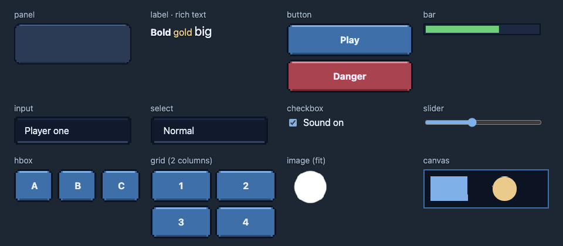
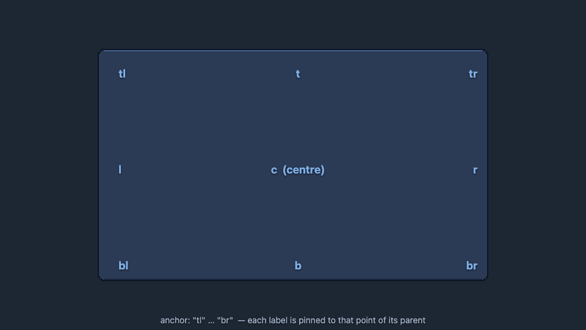
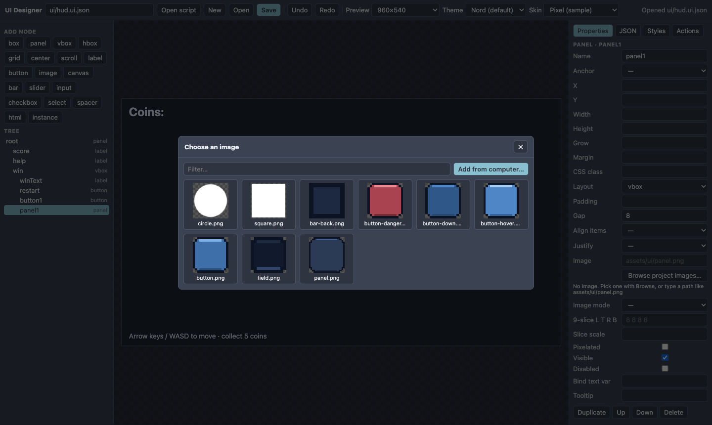
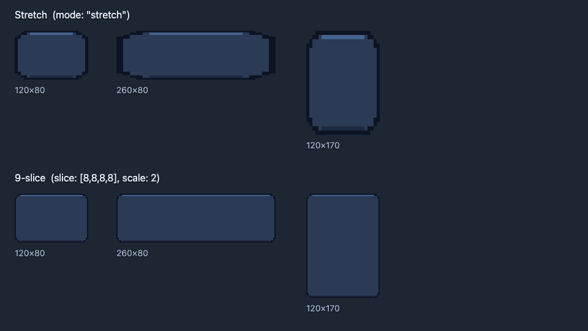
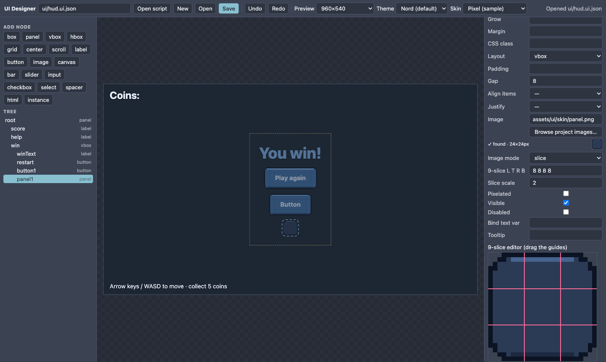
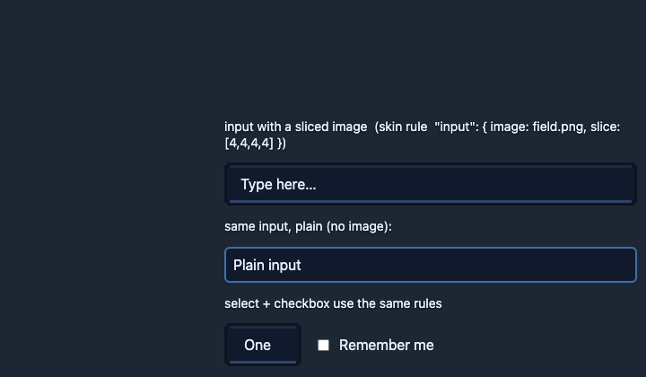
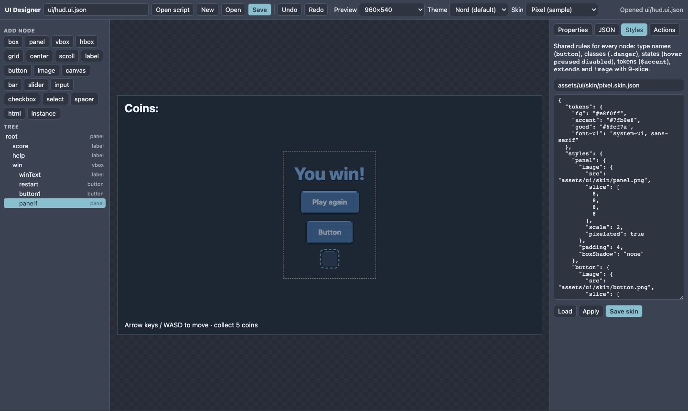
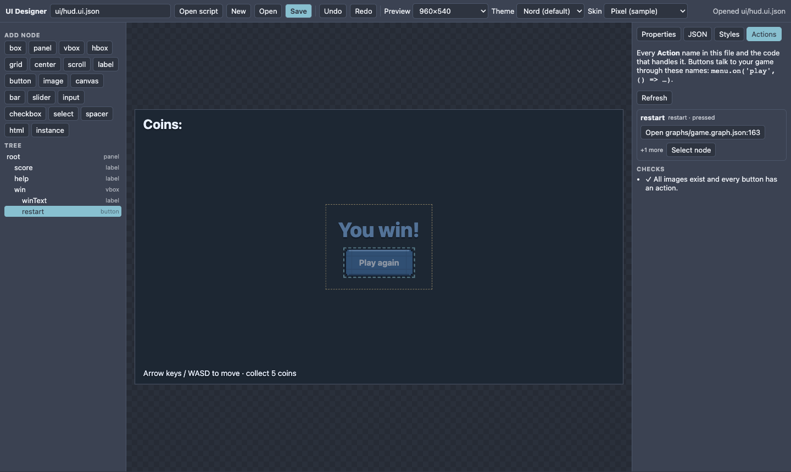

UI Designer
The UI Designer is where you build every screen the player clicks: main menu, HUD, pause screen, settings, dialogs. You draw a tree of nodes, see the result live, and save it as a ui/<name>.ui.json file. Your game loads that file with one line of code. This chapter is the full reference; for a short guided build, follow T44 and T45.

Open the Designer#
- View ▸ UI Designer, or the command palette (Cmd/Ctrl+K, type "UI Designer").
- In the Assets panel, double-click any
*.ui.jsonfile. Right-click a folder ▸ New UI scene creates a blank one. - Layout presets: View ▸ Layout ▸ Visual scripting + UI gives the Designer, Graph and Scene tabs room to breathe.
The window#
| Area | What it does |
|---|---|
| Toolbar | File name box, Open script, New, Open, Save (Ctrl/Cmd+S), Undo/Redo, preview size, colour Theme, Skin. |
| Add node | Click a type to add it inside the selected container (or beside the selected node). |
| Tree | The structure. Click to select, drag a row onto another to move it into a container or reorder. |
| Preview | Click an element to select it. Drag anchored elements to move them. Elements that start hidden in the game are shown ghosted (dashed outline) so you can still edit them. |
| Properties | Every setting of the selected node. Changes appear instantly. Duplicate / Up / Down / Delete are at the bottom. |
| JSON | The raw file. Edit and Apply JSON for bulk changes. |
| Styles | The shared skin (see Styles). |
| Actions | Every action in the file and the code that handles it (see Connecting buttons to code). |
Node types#

| Type | Use it for | Notable settings |
|---|---|---|
panel |
A framed container (window, card). | layout vbox/hbox, gap, padding |
vbox hbox |
Stack children vertically / horizontally. | gap, align, justify, grow on children |
grid |
Rows and columns. | cols, gap |
center scroll |
Centre one child; a scrolling area. | h for scroll |
box |
Plain unstyled element with an HTML tag (main, nav, h1…). Page-style UIs. |
tag |
label |
Text. | text, size, color, bold, italic, align, rich text |
button |
Something to press. | text, on.pressed (Action), toggle, image |
image |
A picture. | src, mode (fit, cover, stretch, tile, slice), slice, scale |
bar |
Progress/health bar. | value 0–1, color, bind.value |
slider |
Draggable value. | min, max, step, value, on.changed |
input |
A text field (also number, colour, file, password, multi-line). | inputType, placeholder, value, on.changed |
checkbox select |
Tick box; drop-down list. | checked; options; on.toggled/on.changed |
canvas |
A drawing surface for your own game code. | w, h |
spacer html |
Flexible gap; raw HTML snippet. | grow; html |
instance |
Another UI file placed inside this one. | ref |
Every node also has Name (how code finds it), Visible, Disabled, Tooltip, CSS class (for skins) and Bind text var (live data, see below).
Layout: anchors and containers#

- Anchor pins a node to a point of its parent (
tltop-left …brbottom-right,ccentre,fillstretches over the whole parent). X / Y move it from that point. Leave Anchor empty for a node that simply flows inside a vbox/hbox/grid. - Width / Height accept numbers (pixels) or CSS sizes such as
70%. Grow makes a child take the remaining space in a vbox/hbox. - Margin and Padding: one number, or four (
top right bottom left). Gap is the space between children. Align items / Justify place children inside a container. - Test other screens with the Preview size box (960×540, 1280×720, phone 390×844, 1920×1080).
Text#
{score}in a label's text is replaced by a value you set from code:menu.set('score', 12). Only changed values touch the page.@menu.playlooks the string up in your language tables (Localisation).- Rich text:
[b]bold[/b],[i],[u],[color=#f7d89b]gold[/color],[size=28]big[/size],[br](new line). It is parsed into safe elements, never raw HTML.
Inserting images#

Any node can show an image. The setting is called Image in Properties (on an image node it is Image plus Mode). Four ways to choose a file:
- Browse project images… opens the picker. Click a thumbnail.
- Add from computer… (in the picker) copies a PNG, JPG, WebP or GIF into your project as
assets/ui/<name>and selects it. - Drag a file from Finder/Explorer onto the Image field: same copy, same result.
- Type the path, relative to the project root:
assets/ui/panel.png.
Below the field Nord tells you the result immediately: ✓ found · 24×24px with a small preview, or ✗ not found:
Which images work where? Every node. A button, panel, label, bar, canvas, even input, select and checkbox can carry an image; it becomes the node's background. An image node shows a picture on its own.
Image modes#
| Mode | Result |
|---|---|
stretch |
Fill the node exactly (distorts). |
fit |
Keep the aspect ratio inside the node. |
cover |
Fill the node, crop the overflow. |
tile |
Repeat; Slice scale sets the tile size. |
center |
Natural size, centred. |
slice |
9-slice, below. |
9-slice (stretch without distorting the corners)#

stretch smears the border. Bottom: slice keeps the corners and edges crisp.A 9-slice image is cut into a 3×3 grid: the four corners keep their size, the four edges stretch along one direction, the middle fills. One small picture therefore becomes any window or button size.
- Select the node, choose the image, set Image mode to
slice. - Type 9-slice L T R B: the border widths in source pixels, left, top, right, bottom (
8 8 8 8; one number applies to all sides). - Or drag the guides: the 9-slice editor below the fields shows the picture with four pink lines. Drag each to the inner edge of the decoration; the numbers and the preview update live.
- Slice scale enlarges the borders on screen (2 = double-size pixel art). Tick Pixelated for crisp pixel art.
Tint a white sprite to any colour#
Like Unity's Image.color: the Tint (multiplies sprite) field multiplies every pixel of the picture by a colour and keeps its transparency, so one white button/panel image can be red, blue or gold. Type a colour (#ff5050) or use the picker beside it. It works on image nodes ("tint") and on any node's background image ("image": { "src": "…", "tint": "#ff5050" }), also with 9-slice. White stays the pure colour, black stays black, a coloured sprite is darkened/shifted (multiply, as in Unity). The tinted copy is made once in the browser and cached. Tints inside shared skins/styles are not applied yet; set it on the node.

Images on input fields#

input whose skin rule uses field.png as a 9-slice. Below: the same node with a plain border.Text fields, drop-downs and checkboxes accept images exactly like buttons do. Because you usually want every field to look the same, put the image in a skin rule instead of on each node:
"input": { "image": { "src": "assets/ui/skin/field.png", "slice": [4,4,4,4], "scale": 3, "pixelated": true },
"color": "$fg", "background": "none", "padding": "2px 6px",
"focus": { "image": { "src": "assets/ui/skin/button-hover.png", "slice": [5,5,5,5], "scale": 3 } } },
"select": { "extends": "input" }The text starts inside the sliced border automatically. The focus state swaps the image while the field is being typed in. Typing, the cursor, selection and on.changed all keep working because the node is still a real input.
Skins: one style for many nodes#

pixel.skin.json).A skin is one JSON file of rules that style all nodes. A rule named button styles every button; .danger is a variant you attach by typing danger into a node's CSS class. Rules can extends other rules, define hover, pressed, disabled and focus states, use $tokens, and set images (including 9-slice) per state. Choose the skin in the toolbar Skin box (it is saved as "skin" in the file), or apply it in code once: ui.useSkin('ui/skin.json'). The complete skin format is in UI scenes and the walkthrough in T45.
Connecting buttons to code#
A button does nothing by itself. It announces an Action name, and your code listens:
const menu = await createUI(root).load('ui/menu.ui.json'); // in a scene script: this.ui.load(...)
menu.on('play', () => startGame()); // runs when a node's Action is "play"- Select the button, type a name into Action (
play). - Right below the field the Designer searches your project and shows where that action is handled:
app.js:94 — menu.on('play', …)with an Open button that jumps to that line in the code editor. - If nothing handles it you see ⚠ No code listens to "play" yet and a Copy code snippet button. Paste the snippet into the script that loads this UI file.
- The Actions tab lists every action in the file: where it is handled, Open the code, Select node, or copy a snippet for the missing ones. It also lists problems (images not found, buttons without an action).
- Open script (toolbar) opens the script that loads this UI file, so you can add handlers there.

restart is handled by a node graph; Open jumps to it.
two: Nord warns that nothing listens yet and offers a snippet.Actions are also emitted as the game event ui:<action>, so event sheets (On game event → ui:play) and graphs (On UI Action) can react without any JavaScript. The search finds handlers in scripts, event sheets, graphs and scenes. (It needs the Nord editor; in a plain browser tab you will see the snippet instead.)
Other ways to get data in and out:
node.on('pressed', fn)/'changed'/'input'/'toggled'on a single node.menu.$('score').text = 'Score 12',.value,.visible,.disabled,.color,.index.- Bind text var: put
{hp}in a label and callmenu.set('hp', 50); or Bind a bar'svalueto a variable.
Saving and loading#
- Save writes
ui/<name>.ui.json; the file box accepts any name (menu→ui/menu.ui.json). - Load it from a script with
await this.ui.load('ui/menu.ui.json'), from an HTML project withcreateUI(root).load(...), or from a graph with the Load UI Screen node. - Several screens can be open at once:
ui.only('pause')shows one and hides the others.
Troubleshooting#
| Symptom | Fix |
|---|---|
| Image shows ✗ not found | Path is relative to the project root; use Browse to pick a real file. |
| Image appears but the corners are blurry/distorted | Set Image mode to slice, fill 9-slice L T R B, tick Pixelated for pixel art. |
| Button does nothing in the game | Give it an Action and add menu.on('<action>', …); check the Actions tab. |
| "No code listens" although my code exists | The name must appear as a quoted string, e.g. menu.on('play'. Computed names are not found by the search. |
| Text field loses focus when I press keys in the game | Use if (menu.typing) return; at the top of your key handler. |
| Style from my skin does not apply | The node's own style wins over skin rules; remove it, or check the rule name (button, .danger). |
| Hidden panel invisible in the Designer | Not any more: hidden nodes are shown ghosted. They are hidden only in the running game. |
See also#
UI scenes reference · T44 Menus and HUDs · T45 Skins and 9-slice · Node graphs · UI & HUD basics